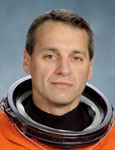

Lyndon B. Johnson Space Center
Houston, Texas 77058
|
National Aeronautics and Space Administration Lyndon B. Johnson Space Center Houston, Texas 77058 |
 |
Biographical Data |
||
RICHARD M. LINNEHAN (BS, D.V.M., MPA)
NASA ASTRONAUT
PERSONAL DATA: Born September 19, 1957, in Lowell, Massachusetts. Raised by his paternal grandparents, Henry and Mae Linnehan. He enjoys various sports, outdoor activities and natural history. His sister, Colleen, resides in Nevada.
EDUCATION: Attended Alvirne High School, Hudson, New Hampshire from 1971 through 1974. Graduated from Pelham High School, Pelham, New Hampshire, 1975. Attended the University of New Hampshire in Durham, New Hampshire, graduating in 1980 with a Bachelor of Science degree in Animal Sciences and a minor in Microbiology. Received the degree of Doctor of Veterinary Medicine (DVM) from The Ohio State University College of Veterinary Medicine in 1985. Honorary Doctorates of Science from the University of New Hampshire (2002), Suffolk University (2002) and Ball State University (2009). Received the degree of Master of Public Administration (MPA) from The Kennedy School of Government at Harvard University, 2009.
ORGANIZATIONS: Member of the American Veterinary Medical Association, the American Association of Zoo Veterinarians, the International Association of Aquatic Animal Medicine, the Association of Space Explorers, and the Explorers Club. Adjunct Professorships at the North Carolina State University College of Veterinary Medicine, Raleigh-Durham, North Carolina and the Texas A&M University Colleges of Education and Veterinary Medicine, College Station, Texas. Board member, Channel Islands Marine and Wildlife Institute (CIMWI), Santa Barbara, California. National Space and Biomedical Research Institute (NSBRI) User Panel member.
SPECIAL HONORS: Navy Group Achievement Award, Navy Commendation Medal, four NASA Space Flight Medals (1996, 1998, 2002, 2008), NASA Outstanding Leadership Medal (1999), NASA Exceptional Service Medal (2002), NASA Distinguished Service Medal (2009), AVMA President's Award, The OSU College of Veterinary Medicine Alumni Award and The University of New Hampshire Distinguished and Outstanding Alumni Awards.
EXPERIENCE: After graduating from The Ohio State University College of Veterinary Medicine in June 1985, Dr. Linnehan entered private veterinary practice and was later accepted to a two-year joint internship in zoo animal medicine and comparative pathology at the Baltimore Zoo and The Johns Hopkins University. After completing his internship, Dr. Linnehan was commissioned as a Captain in the U.S. Army Veterinary Corps and reported for duty in early 1989 at the Naval Ocean Systems Center, San Diego, California, as chief clinical veterinarian for the U.S. Navy's Marine Mammal Program. During his assignment at the Naval Ocean Systems Center, Dr. Linnehan initiated and supervised research in the areas of cetacean and pinniped anesthesia, orthopedics, drug pharmacokinetics and reproduction in direct support of U.S. Navy mobile marine mammal systems stationed in California, Florida, and Hawaii.
NASA EXPERIENCE: Selected by NASA in March 1992, Dr. Linnehan reported to NASA's Johnson Space Center (JSC) in Houston, Texas, in August 1992. At JSC, he completed one year of astronaut candidate training, qualifying him for space shuttle flight assignments as a mission specialist. Dr. Linnehan was initially assigned to flight software verification in the Shuttle Avionics Integration Laboratory (SAIL). He was subsequently assigned to the Astronaut Office Mission Development branch, working on payload development and mission development flight support for future space shuttle missions. He first flew as a mission specialist in 1996 on STS-78, the Life Sciences and Microgravity Spacelab (LMS) mission. In 1998, he served as the payload commander on the STS-90 Neurolab mission. In 2002, he was a member of the four-man Extravehicular Activity (EVA, also known as "spacewalk") crew on STS-109, the fourth servicing mission to the Hubble Space Telescope. In 2008, he was lead EVA crew member on the STS-123/1JA mission to the International Space Station. A veteran of four space flights, Dr. Linnehan has logged more than 58 days in space, including six spacewalks - totaling 42 hours and 11 minutes.
In August 2009, Linnehan returned to Houston and the Astronaut Office after completing a Master's degree in Public Administration at the Harvard Kennedy School of Government and was subsequently assigned as JSC representative to the Texas A&M University's Office of Strategic Initiatives, College Station, Texas, on a NASA Interagency Personnel Agreement (IPA). Dr. Linnehan's IPA activities targeted collaborative, advanced biomedical research projects as well as K-12 Science, Technology, Engineering and Mathematics (STEM) educational initiatives in direct support of NASA/JSC and the Texas A&M University System. Presently, Dr. Linnehan is assigned to both the Astronaut Office and JSC Space and Life Sciences division, working advanced Exploration/EVA projects and directly supporting the development of next-generation physiological/exercise countermeasures and related hardware for future long-duration human space missions
SPACEFLIGHT EXPERIENCE: STS-78/LMS (June 20 to July 7, 1996). The Life Sciences and Microgravity Spacelab (LMS) mission was flown aboard Space Shuttle Columbia. The 17-day flight included studies sponsored by ten nations and five space agencies, and was the first mission to combine both a full microgravity studies agenda and a comprehensive life sciences payload. STS-78 orbited the Earth 271 times, covered 7 million miles in 405 hours and 48 minutes and was the longest duration space shuttle mission of record.
STS-90/Neurolab (April 17 to May 3, 1998) was Dr. Linnehan's second Spacelab mission. During the 16-day flight, the seven-person crew aboard Space Shuttle Columbia served as both experimental subjects and operators for 26 individual life science experiments focusing on the effects of microgravity on the central and peripheral nervous systems. STS-90 orbited the Earth 256 times and covered 6.3 million miles in 381 hours and 50 minutes. Both the LMS and Neurolab missions served as models for future life sciences studies to be conducted aboard the International Space Station.
STS-109/HST Servicing Mission 3B (March 1 to March 12, 2002) was the fourth Hubble Space Telescope-servicing mission and Dr. Linnehan's third flight aboard Columbia. The crew of STS-109 successfully upgraded the telescope's systems over the course of five consecutive spacewalks, leaving it with a new power control unit, improved solar arrays, the new Advanced Camera for Surveys (ACS), and an experimental refrigeration unit for cooling the dormant Near Infrared Camera and Multi-Object Spectrometer (NICMOS). With his teammate Dr. John Grunsfeld, Dr. Linnehan performed three of the five spacewalks totaling 21 hours and 9 minutes. STS-109 orbited the Earth 165 times and covered 3.9 million miles in just over 262 hours.
STS-123/1JA (March 11 to March 26, 2008) aboard Space Shuttle Endeavour was a night launch and landing and the 25th shuttle/International Space Station assembly mission. Endeavour's crew delivered the Japanese Experiment Logistics Module – Pressurized Section (JEM), the first component of JAXA's KIBO Laboratory. The crew also delivered the final element of the station's Mobile Servicing System, the Canadian-built robot, "DEXTRE," also known as the Special Purpose Dexterous Manipulator (SPDM). As lead space walker, Linnehan performed three of five total spacewalks during the mission, logging 22 hours and 02 minutes of EVA time and served as IV1 for the remaining two spacewalks. The STS-123 crew also delivered Expedition 16 Flight Engineer Garrett Reisman and returned to Earth with the European Space Agency's Léopold Eyharts. The mission was accomplished in 250 orbits of the Earth, traveling over 6 million miles in 15 days, 18 hours, 10 minutes and 54 seconds.
APRIL 2013